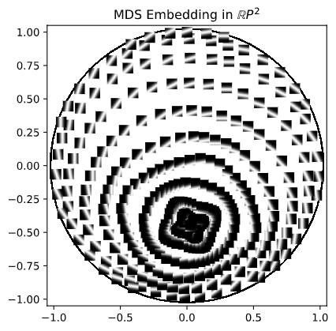

class: center, middle, titlepage count: false # Dimensionality Reduction in Projective Space ## Joshua Mirth ### CSU Data Science Seminar, March 25, 2021 --- # Classical Dimensionality Reduction **Goal:** Given data `\(X \subset \mathbb{R}^N\)`, find `\(f \colon \mathbb{R}^N \to \mathbb{R}^n\)` with `\(n \ll N \)` such that `\(Y = f(X) \subseteq \mathbb{R}^n\)` retains some significant structure of `\(X\)`. * Dimension `\(n\)` can be chosen either _a priori_, or as the smallest dimension which preserves a sufficient amount of structure. * Often want `\(n = 2\)` or `\(n = 3\)` so that `\(f\)` gives a _visualization_ technique. Widely used techniques include * Principal Component Analysis (PCA) * Multidimensional Scaling (MDS) * Laplacian Eigenmaps * Isomap * t-distributed stochastic neighbor embedding (t-SNE) * UMAP --- ## Principal Component Analysis * Linear method: project onto the `\(n\)`-dimensional subspace of `\(\mathbb{R}^N\)` which minimizes the total squared reconstruction error. If `\(\pi_V\)` is the projection onto subspace `\(V\)`, want `$$ F(X) = \sum_i \| x_i - \pi_V(x_i) \|^2 $$` to be minimized. * Probably the most widely-used method in the wider scientific community. * Details: `\(X\)` a `\(k \times N\)` matrix with mean-centered columns. Compute the singular value decomposotion `$$X = U \Sigma V^T$$` where `\(U\)` is a `\(k \times k\)` orthogonal matrix, `\(V\)` is `\(N \times N\)` orthogonal, and `\(\Sigma\)` is `\(k \times N\)` diagonal, decreasing. Representation in `\(\mathbb{R}^n\)` is given by projecting onto the subspace spanned by the `\(n\)` largest singular values, i.e. `$$ Y_n = U_n\Sigma_n$$` where `\(U_n\)`, `\(\Sigma_n\)` are `\(U\)` and `\(\Sigma\)` truncated to size `\(k \times n\)` and `\(n \times n \)`, respectively. The **Eckart–Young Theorem** says that `\(Y_n\)` minimizes `\(F(X)\)`. --- ## Multidimensional Scaling * Nonlinear method: tries to optimally preserve _pairwise distances_ between data points. * Originated, and widely used, in the field of psychology for visualizing (dis)similarities. * Details: `\(D\)` a `\(k \times k\)` distance/dissimilary matrix. Goal to find data `\(X \subset \mathbb{R}^n\)` minimizing (something like) `$$ F(X) = \sum_{i,j} (D_{i,j} - \| x_i - x_j \|)^2 $$` * Classical MDS solves this by constructing `$$ B = -\frac{1}{2} \left( I - \frac{1}{k} J\right)(D \odot D)\left( I - \frac{1}{k} J\right) $$` where `\(J\)` is the matrix of ones, and taking the eigendecomposition `\(B = U \Lambda U^T\)`. Then `\(X = U_n \Lambda_n^{\frac{1}{2}}\)` gives an embedding. If `\(D\)` is Euclidean this is optimal and identical to PCA! -- `\(D\)` is Euclidean if and only if `\(B\)` is positive semidefinite, so the eigenvalues of `\(B\)` describe the "Euclideanness" of the data. --- ## Example: Line Segment Images .figuresplit[ ] .textsplit[ Samples from the space of `\(10 \times 10\)` grayscale images of a line at varying angle and position, `\(X \subset \mathbb{R}^{100}\)`. .fiftyfiftyleft[ ] .fiftyfiftyright[ ] ] --- ## Analysis The PCA/MDS representation of this data is not accurate: .figuresplit[ ] .textsplit[ The topology has been broken! ] --- # Projective Space Real projective space `\(\mathbb{R}P^n\)` is the set of lines through the origin in `\(\mathbb{R}^{n+1}\)`. We can describe points in `\(\mathbb{R}P^n\)` as unit vectors modulo the equivalence relation `\(v \sim -v\)`. Similarly, complex projective space `\(\mathbb{C}P^n\)` is the set of one-dimensional complex subspaces of `\(\mathbb{C}^{n+1}\)`: complex unit vectors modulo `\(v \sim \alpha v\)` where `\(|\alpha| = 1\)`. .center[ .refs[Source: wikipedia.] ] `\(\mathbb{R}P^1\)` is a circle and `\(\mathbb{C}P^1\)` is a sphere. `\(\mathbb{R}P^2\)` can be visualized as a disk with antipodal boundary points identified. The **geodesic metric** on projective space, also called Fubini–Study metric, is given by `$$ d_{FS} ([u],[v]) = \arccos(|\langle u, v \rangle|) $$` where, due to the `\(| \cdot |\)`, we can choose any representative of the equivalence classes. --- # Projective PCA .refs[(See Jose Perea, Multiscale projective coordinates via persistent cohomology of sparse filtrations)] Suppose we have data `\(X \subset \mathbb{R}P^N\)`. Concretely, `\(X\)` is a `\(k \times (N+1)\)` matrix with unit-norm rows. We want to reduce the dimension of `\(X\)`, ideally to visualize `\(X\)` in `\(\mathbb{R}P^2\)`. ### Subspace Projection If `\(V\)` is an `\(n+1\)`-dimensional subspace of `\(\mathbb{R}^{N+1}\)`, then the unit vectors in `\(V\)` modulo antipodes form a copy of `\(\mathbb{R}P^n\)` inside of `\(\mathbb{R}P^{N}\)`, denoted `\(\mathbb{R}P_V\)`. If `\(\pi_V\)` is the projection from `\(\mathbb{R}^{N+1}\)` to `\(V\)`, then we can define a projection `\(P_V \colon \mathbb{R}P^{N} \to \mathbb{R}P_V\)` by `$$ P_V([v]) = \left[ \frac{\pi_V(v)}{\| \pi_V(v)\| }\right] . $$` This is not actually well-defined since `\(\| \pi_V(v)\|\)` may be zero! But with probability one this will not happen to real data. --- ### Optimal Subspaces We want to project onto the sub-projective space which captures the most variance of the data `\(X\)`, `$$ V^* = \mathrm{argmin}_V \sum_{i} d_{FS}(P_V([x_i]), x_i)^2 . $$` To do this, we find the `\(V^\perp\)` which captures the _least_ variance. It can be shown that this is approximately equivalent to minimizing `\(\| V^T X \|^2\)` over all orthonormal matrices `\(V\)`, and the solution is the space spanned by the _right singular vectors_ of `\(X\)` corresponding to the smallest singular values. --- ## Projective PCA Algorithm * Find singular value decomposition of data matrix `\(X\)`. * Choose `\(k\)` smallest singular vectors. * Project `\(X\)` onto their span and apply quotient to get `\(Y \subset \mathbb{R}P^{N-k}\)`. ### Notes * Unlike PCA, singular values do not encode variance, it must be computed manually. * Can be done iteratively or batched (projecting down one dimension repeatedly, or many dimensions at once). * Equivalent procedure holds in complex projective space. --- # Projective Coordinates **Question:** How do we get a data matrix `\(X \subseteq \mathbb{R}P^N\)`? `\(\mathbb{R}P^\infty\)` is the Eilenberg–MacLane space `\(K(\mathbb{Z}/2\mathbb{Z}, 1)\)` and `\(\mathbb{C}P^\infty\)` is `\(K(\mathbb{Z}, 2)\)`. This means that for any space `\(S\)` there is a bijection between ` \(H^1(S;\mathbb{Z}/2\mathbb{Z})\)` and (homotopy classes of) maps `\(S \to \mathbb{R}P^\infty\)` and between `\(H^2(S;\mathbb{Z})\)` and maps `\(S \to \mathbb{C}P^\infty\)`. Any distance matrix `\(D\)` can be realized as coordinates in high-dimensional real projective space with the following procedure: * Choose a landmark subset of the data and its distance matrix `\(D_L\)`. * Compute the Vietoris–Rips persistent (co)homology of `\(D_L\)`. * Choose a cocycle representing some `\(H^1\)` cohomology class. * Find a map to `\(\mathbb{R}P^\infty\)` in the corresponding equivalence class. * Apply to the entire data set. The result is necessarily in some `\(\mathbb{R}P^N \subset \mathbb{R}P^\infty\)` because the data is finite. In fact, `\(N\)` will be the size of the landmark subset. * Requires choosing a number of parameters carefully. Typically want a minimal landmark subset, a prominent persistent cocycle, and a sparse representative of that cocycle. --- ## Lines Data Choosing landmarks very carefully, projective PCA gives us the embedding on the right. .fiftyfiftyleft[ ] .fiftyfiftyright[ ] --- ## Projective MDS Given a distance matrix `\(D\)` we can find data in `\(\mathbb{R}P^n\)` by computing projective coordinates and applying projective PCA. The result may not preserve the original distances well. .fiftyfiftyleft[ ] .fiftyfiftyright[ ] --- ## Problem Formulation The goal of MDS is to find points `\(x_1 , \ldots , x_n\)` which minimize `$$ S(X) = \sum_{i,j} \left( D_{i,j} - d_{FS}(x_i,x_j)\right)^2 = \sum_{i,j} \left( D_{i,j} - \arccos(|\langle x_i, x_j \rangle|)\right)^2 . $$` We can remove the nonlinear arccosine term by inserting weights: `$$ S(X) \approx \sum_{i,j} W_{i,j} \left( \cos(D_{i,j}) - |\langle x_i, x_j \rangle | \right)^2 $$` where `\(W_{i,j} = \frac{1}{1 - \cos^2(D_{i,j})}\)`. Further, we change to the nonmetric formulation `$$ F(X) = \sum_{i,j} W_{i,j}\left( \cos^2(D_{i,j}) - \left(\langle x_i, x_j\rangle\right)^2 \right)^2 $$` to get a smooth and naturally invariant function of the matrix `\(X\)`. --- ## Optimization To find a realization in `\(\mathbb{R}P^n\)` we seek to minimize `\(F(X)\)` over all `\(k \times (n+1)\)` matrices with unit-norm rows. (The _oblique manifold_ or `\(k\)` copies of `\(S^1\)`.) In matrix form, we are trying to minimize `$$ F(X) = \| W \odot ((X^TX)^2 - \cos^2(D)) \|^2_F $$` Such optimization problems are considered in [Journée et al.], [Grubišic and Pietersz], and others, who develop gradient descent-type methods in this space. We use the software Pymanopt to apply a conjugate-gradient method to minimize `\(F(X)\)`. --- # Line Images with MDS .fiftyfiftyleft[ ] .fiftyfiftyright[  ] --- # Point Images .fiftyfiftyleft[ <img src="fuzzy_point.png" /> ] .fiftyfiftyright[ ] Prominent `\(H^2\)` class suggests a complex projective embedding. --- ## Complex Projective MDS Almost entirely carries through as the real case. Additional requires: * An `\(H^2\)` cocycle with integer coefficients. Standard hack is to shift coefficients from `\(\mathbb{F}_p\)` to `\(\mathbb{Z}\)` by centering at zero. * Must use the _harmonic_ cocycle representative. Requires computing the coboundary matrix of the simplicial complex and solving a linear least squares problem. * Optimization functionally the same. * To visualize `\(\mathbb{C}P^1 \subset \mathbb{C}^2\)` need to map to `\(S^2 \subset \mathbb{R}^3\)`. We use the Hopf map: `$$ h\left(\begin{bmatrix} a_1 + ib_1 \\ a_2 + ib_2 \end{bmatrix}\right) = \begin{bmatrix} 2a_1a_2 + 2b_1b_2 \\ -2a_1b_2 + 2a_2b_1 \\ a_1^2 + b_1^2 - a_2^2 - b^2_2 \end{bmatrix} $$` --- ## Point Image Output .fiftyfiftyleft[ ] .fiftyfiftyright[ ] --- # Future Work? There are two natural generalizations to consider: * The Grassmannian `\(Gr_k(\mathbb{R}^n))\)` of `\(k\)`-dimensional subspaces of `\(\mathbb{R}^n\)`. Projective space is `\(Gr_1(\mathbb{R}^n)\)`. * Other Eilenberg–MacLane spaces in which coordinates can be constructed from cohomology. In particular, the lens spaces `\(K(\mathbb{Z}/p\mathbb{Z}, 1)\)`. * Exploring other metrics (e.g. chordal) on projective space which have relations to metrics on the above. .center[ ] --- class: titlepage count: false # Thank you! ##Questions? ### Selected References: .left[ .refs[ * Jose Perea. Multiscale Projective Coordinates via Persistent Cohomology of Sparse Filtrations. 2017. * Pymanopt. https://www.pymanopt.org/ * Ripser. https://ripser.scikit-tda.org/en/latest/ * Journée, Bach, Absil, Sepulchre. Low-rank optimization for semidefinite convex problems. 2008. * Joshua Mirth and Jose Perea. Dimensionality Reduction in Projective Space. In preparation. ] ]